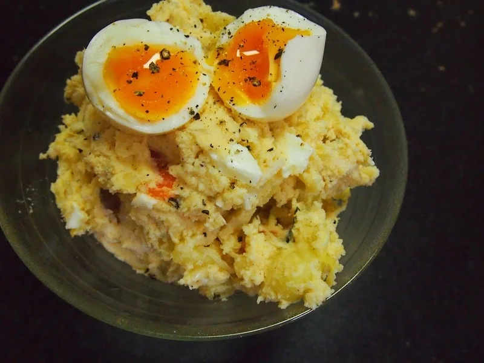
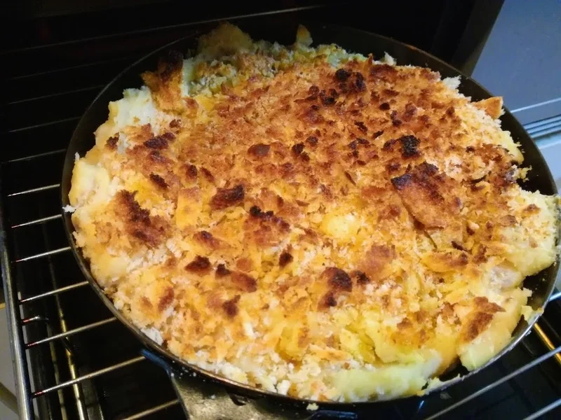

副菜・もう一品
おからパウダー入りポテトサラダ
じゃがいもとおからパウダーを合わせ、カロリーハーフのマヨネーズと同量のプレーンヨーグルトで和えるポテトサラダです。じゃがいもをおからパウダー
ポテトフレークを使い、鍋の中で生地をまとめ、成形せずに焼ける鶏そぼろ入りのスプーンコロッケです。おからパウダーは3人前で15gなので、使い切ろうと増やす前に、まずはこの配合で作ってみてください。

鶏そぼろを用意します
加熱済みの鶏そぼろがある場合は、この下準備を省いて、次の「コロッケを作ります」へ進みます。そぼろから作る場合は、4人前を作り、そのうちの1食分を使います。
コロッケを作ります
ブイヨンと牛乳を、沸騰直前まで温めます。火を止めてから、ポテトフレークとおからパウダーを加えます。粉類を先に量っておくと、火を止めたあと落ち着いて混ぜられます。
鶏そぼろは、味のついた加熱済みのものを使います。生のひき肉をそのまま混ぜて、表面を焼くだけで仕上げないでください。
焼き時間の5分は目安です。魚焼きグリルとオーブントースターでは焼け方が違います。パン粉が焦げないよう、表面を見ながら焼いてください。
焼き上がった器は熱くなっています。取り出す時と取り分ける時は、やけどに注意しましょう。
一つずつ丸めて衣をつける作業を省き、器からすくって食べる料理です。表面のパン粉で香ばしさを楽しみます。
加熱時間は作った時の目安です。容器や調理器具によって仕上がりは変わります。中心まで火が通っていることを確認してください。
鶏そぼろ入りスプーンコロッケの材料・作り方（50kgdiet.com） →
このページは書籍の改訂原稿をもとに掲載しています。元記事は過去の記録のため、材料や表現が異なる場合があります。